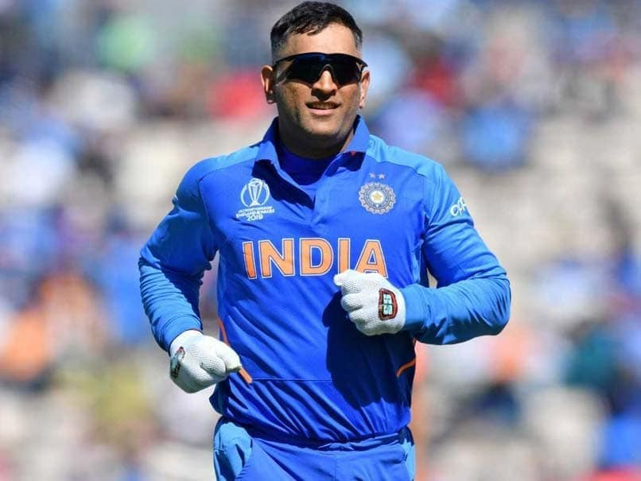
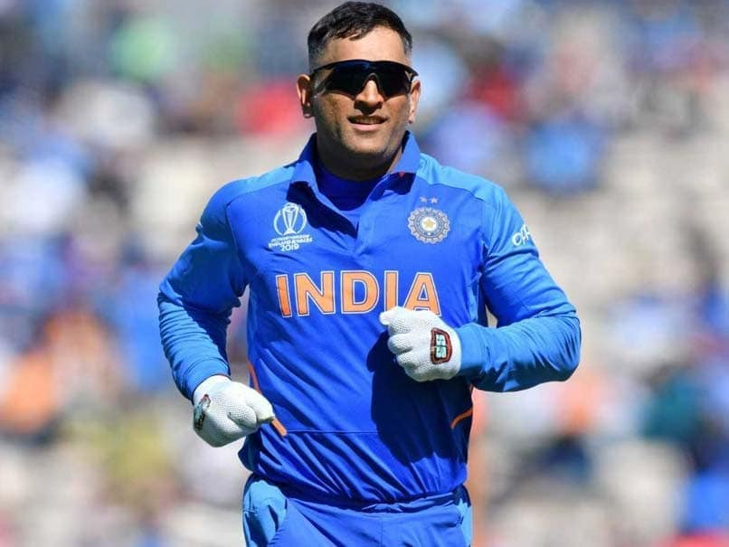

For more information of indian cricket board >>

Details of ICC Trophies
WORLD CUP 1983
The 1983 Cricket World Cup was the 3rd edition of the Cricket World Cup tournament. It was held from 9 to 25 June 1983 in England and Wales and was won by India. Eight countries participated in the event. The 1983 World Cup was full of dramatic cricket all through the tournament.
WORLD CUP 2011
The 2011 Cricket World Cup Final was a One Day International (ODI) match played between India and Sri Lanka at the Wankhede Stadium, Mumbai, India on 2 April 2011, Saturday under the captaincy of M. S. DHONI.
The bat was used by Mahendra Singh Dhoni in World Cup 2011 finals on 2 April 2011 art Wankhede Stadium at hit the winning shot." ... Dhoni hit the winning six, and India won the final by six wickets. It was also India's second and last ODI World Cup title since their 1983 triumph.
CHAMPIONS TROPHY 2013
The 2013 ICC Champions Trophy was the seventh ICC Champions Trophy, a One Day International cricket tournament held in England and Wales between 6 and 23 June 2013.[1] Three cities hosted the tournament's matches: London (at The Oval), Birmingham (at Edgbaston) and Cardiff (at Sophia Gardens, known as Cardiff Wales Stadium for the tournament).
India won the competition, beating England by five runs in the final after overcoming South Africa, the West Indies and Pakistan in the group stage, followed by a semi-final victory over Sri Lanka. As winners, India earned $2 million in prize money, the largest amount since the tournament's inception.
Details of Trophies
Indian Premier League
Indian Premier League (IPL) is the latest, and one of the biggest revolutions in Indian cricket. The Board of Control for Cricket in India (BCCI)
runs the Twenty- 20 format tournament in India.
It follows a Double round-robin league and Playoffs format. The IPL, caps of the Domestic Cricket Season in India.
The tournament started in 2008, after the First T-20 World Cup, in Which India were the Champions. Within 10 editions,
IPL has not only revolutionised Cricket but also the Sports Industry in India. It provides an opportunity for young talent to play and learn with the topmost international players in the world.
Chennai Super Kings won their third title by winning the 2018 Indian Premier League. Thus joining the Mumbai Indians as the most successful teams in the competition.
The BCCI also organises various tournaments at the U-23, U-19 and U-16 category for men.
All these domestic tournaments in India have given Indian Cricket players enough practice, experience, and also the exposure to dominate International Cricket.
These leagues and Competitions have led to the creation of Legendary Cricketing Players like Kapil Dev, Sachin Tendulkar, Rahul Dravid, Ganguly, M.S Dhoni, Virat Kolhi and many more.
Currently, India Men Team Ranks 1st in the ICC Test Cricket and 2nd in both ODI and T20I.
Ranji Trophy

The Ranji Trophy started back in the 1934-35 season and is named after KS Ranjit Sinhji Vibhaji, the Prince of Nawanagar. The Ranji Trophy is the premier domestic cricket competition of India.
Teams representing regional and state cricket associations battle against each other to win this prestigious tourney. With time, Ranji Trophy has survived many changes in formats. It started out as a Zonal Competition,
changed to a two-tier league-cum-knockout format which then started to include relegation and promotion between the tiers.
Currently, a total of 37 teams will take part in the Ranji Trophy this year, which includes 9 new teams. The tournament will have nine teams each in Elite Group A and B. The Elite Group C will have 10 teams and nine new teams are in the Plate group category.
Top five teams from Group A and B combined will get through the knockout rounds, along with the top two teams from Group C and the table topper of the Plate Group.
From the 2016–17 competition the BCCI told it will be hosting all games at a neutral venue, rather than the home and away system.
Vijay Hazare Trophy
The Vijay Hazare trophy follows Duleep Trophy. It is named after Prominent Indian Batsman-Vijay Hazare. It is in its 27th Edition. Since its inauguration in the 1993-94 season, The Vijay Hazare Trophy lives through various format changes.
Until 2001-02, no finals were held. Teams consequently played only within their zones, with no overall winner named.
During the 2002–03 and 2003–04 seasons, a final round-robin stage was held for the top teams in each zone. Since the 2004–05 tournament, it follows a full finals series (including semi-finals and afinal), with varying formats.
Since 2002-03, Tamil Nadu has won the tournament 5 times. The most recent winner is Karnataka for the 2017-18 season under Karun Nair‘s captainship.
The 2018-19 season will see 160 one-day matches played between 28 state teams and starts in September 2018.

 


For more information of indian cricket board >>